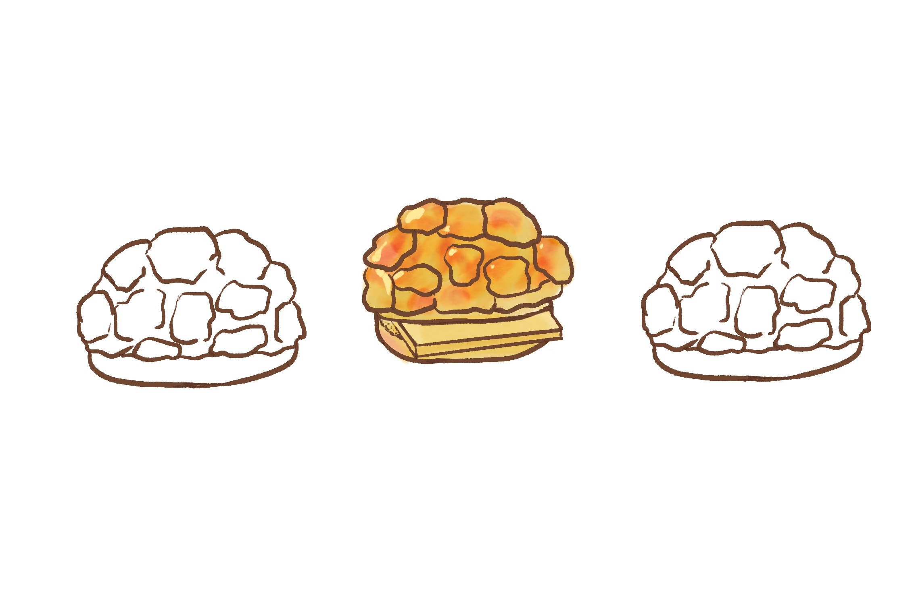

Description
The pineapple bun (also known as Ba Lo Bao), a sweet bun originating from Hong Kong and found in Chinatowns globally, is renowned for its distinctive topping resembling the texture of a pineapple. Despite its name, this treat doesn't contain pineapple but is a reference to its unique textured appearance. Emerging in post-World War II Hong Kong, the pineapple bun reflects the cultural fusion of Portuguese influence and local flavors.
Research Evaluation Google Doc
Ingredients*
SERVING SIZE: 12
- FOR THE BREAD DOUGH
- 2/3 cup heavy cream (at room temperature)
- 1 cup milk (at room temperature)1 large egg (at room temperature)
- 1/3 cup sugar
- 1/2 cup cake flour
- 3 ½ cups bread flour
- 1 tablespoon active dry yeast
- 1 ½ teaspoons salt
- FOR THE TOPPING DOUGH:
- 1/4 cup dry milk powder
- 1¼ cups all-purpose flour
- 1/2 teaspoon baking soda
- 1/4 teaspoon baking powder
- 2/3 cup superfine sugar (it’s very important that it’s superfine)
- 1/4 cup vegetable shortening (can subsitute lard or butter)
- 2 tablespoons milk
- 1 egg yolk
- 1/8 teaspoon vanilla extract
- FINISHING:
- 1 egg yolk
Recommended Equipments: mixer with a paddle attachment, towel, plastic wraps, oven, and silicone brush
Instructions
TOTAL TIME: 2 hours 42 minutes (PREP: 2 hours 30 minutes + COOK: 12 minutes)
- In the bowl of a mixer, add heavy cream, milk, egg, sugar, cake flour, bread flour, yeast, and salt.
- Attach the dough hook and turn on the mixer to "stir" for 15 minutes
- Cover the bowl with a damp towel and set still for 1 hour (dough should increase to 1.5X its size).
- Return the dough to the mixer and stir for an additional 5 minutes to eliminate air bubbles.
- Transfer the dough to a lightly floured surface and divide it into 12 equal pieces.
- Shape each piece into a circular bun; cover buns with a clean, dry kitchen towel and let rise for 1 hour.
- While that’s happening, make the topping. Add the fine dry milk powder to a mixing bowl.
- In a mixing bowl, combine dry milk powder, flour, baking soda, baking powder, and superfine sugar.
- Add shortening, milk, egg yolk, and vanilla, mixing everything into a dough. Adjust with milk if needed.
- Cover the topping dough tightly with plastic wrap and set it aside at room temperature.
- When the buns are done rising for a second time, preheat the oven to 350 degrees F.
- Separate the topping dough into 12 equal pieces and roll them into balls.
- On a clean surface, roll out each ball into a flat circle and place one onto each bun.
- Brush with egg yolk and bake at 350 degrees for 12-13 minutes.
Best served while hot!
To store, place the buns in a ziplock bag and squeeze out as much as much air as possible.
Store them at room temperature for 2 to 3 days and freezer for up to 2 months.
Sample Imagery
I will be drawing my images. Here is an example:
Recipe Websites
The Woks of LifeI like this site in particular for its interactive recipe. Immediately on the header of the page, there is a “Jump to Recipe” button that brings the user down to where the recipe is located. Moreover, there is a slider that asks for the user’s input on the number of servings, and the amount of ingredients will change accordingly. Another nice touch is the checklist feature, aiding users in managing ingredients effortlessly.
Budget Bytes
In addition to the user-friendly "jump to recipe" button and adjustable serving size, this website goes the extra mile with its "cook mode" switch, preventing screen darkening during recipe preparation. It also has an embedded calculator program which helps the user calculate the cost of each ingredient. The consistent visual language and the highlights in the texts are also nice touches.
Food.
This website has the special touch of a “Unit” button, which allows the user to change between the US and the metric scales to accommodate their habits, without having to convert the ingredient measurements in other sites. It also has less of a “blog” quality to it, that there is less information presented in a long scroll of information. Its condensed layout avoids excessive scrolling, presenting ingredients and the recipe in a single screen size for efficient navigation during cooking.
Non-Recipe Websites
CW&TI have always liked this site for its minimalist design and cohesive cyber-net visual language, with the type-writing font, in particular, suitable for the data file theme. What I appreciate the most about this website is its occasional break from the established visual pattern and hierarchy through the use of pop colors in images and the insertion of gifs.
Ivy ChenAside from the smooth vertical scroll and the subtle color scheme, I appreciate how this site creates a fluid transition between photographed images and illustrations, achieved through the creation of illustrative contour lines. This slight change within different styles of image sources is something I always find challenging to achieve in my designs.
Dopple PressI appreciate the cartoonish nature of this website, harmoniously blending design elements like typeface, animation, color, and illustration. The textured background adds a unique touch, enhancing the comic print theme. In my website design, I aim to incorporate illustrations as the primary image source, creating the feel of a hand-written recipe book.